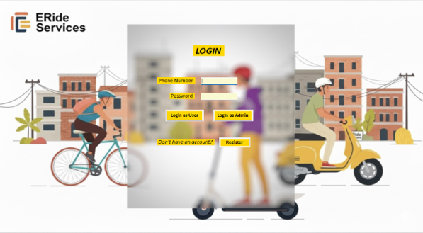

A Java-based application designed to manage employee information through a graphical user interface. The project demonstrates object-oriented programming and basic employee record management.
Tech Stack: Java, Object-Oriented Programming, GUI

A desktop application developed to manage an e-cycle rental service. The system includes user registration, login, and database-related functionality.
Tech Stack: C#, Windows Forms, SQL Server
An interactive 2D graphics project developed using OpenGL and C++. It features an animated village and camping environment with mountains, trees, houses, a river, moving boats, birds, clouds, and an airplane. The project also includes day, sunset, and night modes, rain, thunderstorm effects, and an animated campfire. Keyboard controls allow users to change environmental conditions and control different animations in real time.
Tech Stack: C++, OpenGL, FreeGLUT, Code::Blocks
Key Features: